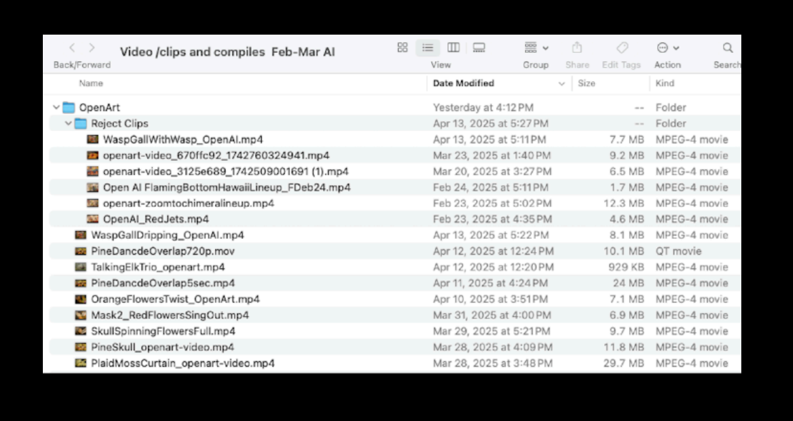

Ave Maria
Ave Maria – Augmented Version is an experimental photographic series that explores the
transformation of feminine identity in the digital age. By combining self-portraits, generative AI,
hand embroidery, and printed photography, the project questions the boundaries between real
and virtual, between embodied body and simulated image.
Some images are generated from scanned analog photographs, sometimes almost identically
reproduced by artificial intelligence. This process does not aim to reinforce materiality, but rather
to disturb perception, to blur the line between original image and recreated image, between
analog memory and digital illusion. This shift creates a deliberate confusion, a loss of bearings,
raising the question of what it means today to see a body.
I also work with selfies taken on an iPhone, transformed by AI, then printed and hand-
embroidered. This back-and-forth between algorithmic and manual gestures builds a dialogue
between machine and matter, where each portrait becomes an augmented, unstable, fragmented
self-portrait. The faces multiply, distort, and move away from a fixed truth to open onto a fluid,
recomposed identity. The body thus becomes a site of experimentation — both intimate and
political.
Through this hybridization, Ave Maria – Augmented Version diverts the sacred imagery
associated with the figure of the Virgin to explore a contemporary otherness: that of a feminine
identity both unstable and dissolved in data flows, yet reaffirmed through the act of creation. The
work questions our relationship to aura, to bodily truth, and to the persistence of the sensitive in
the face of artificiality.
Between ritual, alteration, and a deflected prayer, this series offers a visual reflection on how our
identities — and our flesh — are being redefined in a world where artificial intelligence is already
shaping our faces.
Negotiation Arena

Building Blocks for Chimera
Biological samples collected from ecosystems
Debris Sculptures
Hybrid forms between nature and artifice

Backstage at The Dioramas
Setting up photographic tableaus

Photo Tableau
Final photographic compositions

AI Co-creator Profile
Photography + Poetry & AI = Moving Images

AI Interpretation of Poetry
Tableau are shared with an AI collaborator
who is prompted with Haiku.
Movement added to Diorama
Photographs by AI Collaborator
is an interpretation of the poetry.

Video Editing Process
Most raw clips are 5 seconds and are edited in Capcut.
Human Reponses with Poetry
Haiku / Poems written by human artist in
response to the diorama images.

Creative Divergence
I am looking for consistency in my world building.
The AI collaborator, on occasion, will run off on flights of fancy.
Though entertaining, the hallucinations do not make the final cut
Creative Divergence
Rejected imagery
Biological samples collected from ecosystems
Setting up photographic tableaus
Final photographic compositions
AI Co-creator Profile:
Topaz Photo AI - for cleaning images
Photoshop Beta - for image development
Kling 1.6 for adding movement to the clips - accessed through OpenArtAI
Capcut - Editing
Topaz Photo AI - for cleaning images
Photoshop Beta - for image development
Kling 1.6 for adding movement to the clips - accessed through OpenArtAI
Capcut - Editing
Tableau are shared with an AI collaborator
who is prompted with Haiku. The resulting
movement is an interpretation of poetry.
Most raw clips are 5 seconds and are edited in Capcut.